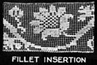
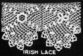
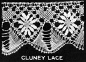
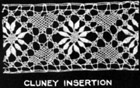
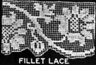
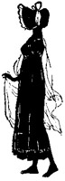

1926—The New-Way Course in Fashionable Clothes-Making
Lesson 46—Trimmings and Beadings
The Part that Trimming Plays
The simplest dress must have some trimming, some touch of suggestion of ornamentation. It may be just a touch of color. It may be a bead girdle. It may merely be an attractive collar and cuff set. But even the most severely tailored of frocks has some finish, some trimming to give it a final charm.
But trimmings may not be chosen indiscriminately. You cannot make a dress and when it is finished say "I am going to trim this with flowers, or with ribbon, or with braid." You must know, even before you begin the dress, just what the trimming is going to be, and just what the trimming should be. Certain types of trimming are suitable to certain types of material, to certain types of figures. Other trimmings are appropriate only to certain occasions. A very fine distinction exists between good trimmings and poor trimmings—and a most charming frock can be utterly spoiled by the use of the wrong trimming idea.
Before studying each type of trimming individually, suppose we make a general survey of the kinds of trimmings, and see just what materials and occasions are most appropriate for each kind. First there is hand embroidery—one of the most charming and delightful types of trimming known—and a trimming which dates way back to the time when queens themselves embroidered their own dainty wearing apparel. Every one loves hand embroidery, but hand embroidery may not always be used.
For instance, if a one-piece dress is tailored in line and finish, it could not be appropriately trimmed with hand embroidery. However, if the vest was made of some light material such as crepe or georgette, a touch of hand embroidery might be used across the top. On all dresses, blouses and underthings made of fine materials hand-embroidery may be used to advantage.
Then there is beading, another charming type of trimming to which Fashion reverts with forgivable insistence each new season. Sometimes the beading takes the form of a design. Sometimes the whole dress is beaded. Sometimes the bottom of the skirt boasts a covering of the beads. But this type of trimming may be used only when the material is very fine and the garment intended for some special occasion.
Another type of trimming used a great deal is braiding. On tailored suits and dresses military braid is most attractive, and sometimes designs are braided on dresses that are tailored in foundation but attractively trimmed to be used on "dress-up" occasions.
Laces and ribbons are used for undergarments and summer clothes. Very fine filet lace may be used on heavier dresses, too—to afford a soft finish to the neck and sleeves. Ribbons are used quite extensively on children's clothes and as sashes on one-piece dresses. Such trimmings as tucks, plaits and ruffles are usually indicated in the pattern, and the more elaborate trimmings such as metal lace and flowers should be used on clothes meant for very dressy occasions.
Manufacturers are now turning out trimmings to imitate hand embroidery. This trimming is machine made, the foundation is either net or silk and the embroidery is done either in silk or wool. This may be purchased by the yard in many different widths as well as in motifs or ornaments and offers a very pleasing substitute for hand embroidery to the woman whose time is limited.
Hand Embroidery
In Book II, Lesson 14, you will find complete information regarding the making of embroidery stitches—with many valuable trimming suggestions. Refer to this lesson if you are in the least doubt as to how scalloping, or applique, or faggoting or any of the other embroidery stitches are made.
We are now interested solely in the occasions when hand embroidery is used, and what type of dress this type of trimming is fitted for. We are also interested in the stamping, in the color combination.
First let us consider color. Color in hand embroidery is very important. As the work of hand embroidery requires extreme care and a great deal of time, the finished product has a certain value. To use poor cotton, wool or silk, therefore, the kind that fades when the garment is exposed to the sun, or runs when it is washed, is poor judgment. In selecting embroidery thread, insist upon the kind that retains its color and its brilliance.
The same rules of color harmony that apply to clothes, apply also to the combination of colors in hand embroidery. Do not use any two colors that clash. Do not use any colors that do not harmonize with your own coloring. Be careful that the color is distributed with a regard for balance and harmony—do not have too much of one color and too little of another. A splendid way to get many interesting color combinations is to study the high-priced dresses in the shops and note what colors are used in them. Remember always that the materials of the dress is the background, and that every color you use must enhance this background rather than detract from its color influence.
Hand embroidery may be applied in varied designs. There are certain designs which are appropriate for one-piece dresses. There are other embroidery designs which are appropriate for evening dresses. Still other designs are suitable for use on fine silk blouses. Select your design with regard for the occasion and the general silhouette of the dress. Remember that embroidery designs have the same quality of emphasizing bad points as the lines of the dress. Great care must be used in making a correct embroidery design selection.
It is a great deal more economical to do one's own stamping than to have it done. Patterns may be purchased at very little cost and used to trace a design for the embroidery. In a previous lesson you learned the method of transferring these stamped patterns—refer to it if you have forgotten.
If you use imitation hand embroidery, use very little of it—perhaps just enough for a girdle or for simulated panels on the skirt. Select it with as careful a regard for color and design as you would if you were making hand embroidery. If it is selected carefully and attached to the garment neatly this type of embroidery very closely parallels hand embroidery and is often very hard to detect.
Beading
There are two distinct kinds of beading that may be used as trimming—hand beading which you apply to the garment yourself or ready-made beading which is purchased by the yard or by motifs. Both are equally attractive, but the latter is probably the most economical as it saves a great deal of time. And really, as a clothes-maker time is quite valuable to you, isn't it?
There are many different kinds of beads—wooden beads, satin beads, steel beads, glass beads, and various novelty beads. In making your selection be sure that the type of bead harmonizes with the type of material used, and with the design selected. This design is stamped on the garment just as it would be for embroidery, and you may do it yourself or have it done in an art shop where such designs are made.
Afternoon frocks of georgette or crepe are very often beaded in attractive designs. If you do this beading yourself, be sure that all threads are firmly fastened and that you use as substantial a quality of thread as the material allows—otherwise you will find that the dress outlives the trimming and that will never do, you know!
Fine blouses are often beaded and evening gowns usually are made with bead trimmings. when beading is used, no other trimming should be used with it except embroidery eyelets or some similar touch of hand embroidery. To use beading and ribbon or beading and flowers is to make a dress gaudy. Use very fine judgment in selecting a pattern for beading, and if the beads are colored be sure that the color harmonizes with the foundation material. Satin beads are very effective when used on dresses for older women—dresses made of black or gray satin or crepe.
Ready-made beading, which may be purchased by the yard or motif, is not always very satisfactory, especially if the beading is used made by machine. Unless it is finished well and made with a regard for wear, the beading will not last long. Examine the beading very carefully before purchasing it to make sure that it will do just to the dress you took pains to make.
Beading is an inappropriate trimming when used on tailored clothes, or clothes that are worn to business or school. It should be used only on clothes intended for dressy occasions.
Braiding
You have already learned to use the braider attachment on the sewing machine. With this wonderful little steel attachment you should be able to sew soutache braid to garments in designs as simple or elaborate as you please. It is a marvelous time and work saver and we advise you to use it whenever the occasion arises. On a pretty little linen summer dress, for instance, the most appropriate trimming we can think of is a dainty braided design made with soutache braid in a contrasting color.
Then too, there is military braid—so appropriate on tailored garments of all kinds, and so valuable as a finish to children's clothes. Edges bound with military braid are neat, smart edges—and whenever you want a simple, inconspicuous but smart trimming we advise you to put your binder to work and trim the edges of the garment with military braid.
Fashion books reveal, almost every season, capes and coats that boast nothing except braid as trimming. Silk braid, in parallel rows, not only adds a neat finish but effects a most pleasing trimming. On tailored dresses and coats you Will find that this is the most sensible, appropriate and economical trimming you can use. But unless you keep the lines mathematically straight and even, and the braid attached as neatly as possible, the whole charm of the trimming will be lost.
Laces
Every one loves lace. There is something in its gossamer prettiness that has in it the elusive charm of a spider's web—something beautiful, attractive and charming without being conspicuous, rich without being gaudy. When all other trimming seems somehow to be inappropriate, lace comes into its own and adds a just-right finish and trimming to the garment.
The designs used in laces are constantly changing, constantly being made more beautiful more charming. There are dignified filet laces and dainty Valienciennes edges. There are rich Irish laces and elaborate cluney laces. In the beauty and variety one has to select from, all other trimmings fade into insignificance.
However, there is one serious drawback. Lace is often difficult to handle, difficult to apply in just the right way, in just the correct position. For this reason, the beginner who is still wavering between seams and hems and plackets does well to avoid lace trimmings until she has so mastered the fundamentals of dressmaking that she may devote all her concentrated attention to the application of the lace.
Hand made laces are very expensive, and should be used only on garments in which the material and workmanship are of the finest. The less expensive machine-made laces may be used on underthings and on children's clothes. All-over lace should be used for evening gowns, as should also the rich metal laces one can buy ready made. The finer filet and cluney laces may be made at home if one has the time and ability, but as such fine imitations can be bought in the shops it is not advisable unless one particularly wants hand made lace for some garment into which has gone all one's love of beauty and ornamentation.
Lace, as we all know, is a very delicate, fine openwork fabric. It is really a network of threads woven into intricate designs or patterns. These threads are sometimes linen, sometimes silk, sometimes cotton. But no matter what the threads are, lace is a delicate fabric and should be treated accordingly when laundering. Some weaves and some qualities have greater wearing qualities than others, and in selecting lace it is therefore wise to consider carefully the weight of the material on which the lace is to be used, and the exposure to wear which the lace will receive. In other words, when planning a gown which is to be trimmed with lace, buy lace to match the material instead of matching material to the lace. You will find this to be by far the more economical and satisfactory way.
All-over lace may be used to make an entire dress, over a foundation of satin or georgette, and is often used for the body or waist-part of a dress. This type of lace has many uses in millinery also. The more elaborate all-over laces are used extensively in the making of evening gowns.
Baby lace is a very narrow, dainty lace which is used only on fine materials. It is used very largely for the trimming of infant's clothes—hence the name. It is also used in applying edges to underthings.
There are many other kinds of lace—Battenberg lace, Brussels point lace, Chantilly lace, Dutch lace, Oriental lace—many different kinds and many different designs. You will be able to see all kinds in your favorite shop and select the type you know is most appropriate to the material and occasion of the garment.
Black lace is used a great deal in the making of evening gowns, and is sometimes even used as a trimming on afternoon gowns. Great care should be taken in selecting black lace as the cheaper kinds become gray after a short while and this mars the appearance of the garment. Hold it up to the light, when purchasing, and be sure that it is jet black.
Illustration 47-1 shows a group of hand made lace. These laces are made of linen and are suitable for the trimming of fine garments.
Ribbons
The uses of ribbon are manifold. In millinery and in dressmaking, ribbons are considered indispensable. But, being mainly interested in dressmaking, let us consider the uses of ribbons in this particular branch.
Two uses predominate—ribbon sashes and ribbon bows. On children's dresses and on summer frocks, ribbon sashes are very pretty. The stout woman should avoid wide ribbon sashes, however, and the short person should avoid sashes that tie in a huge bow in the back. For children, the wider the sash and the bigger the bow, the happier their little hearts will be!
Remember color harmony in selecting ribbons. The color of the ribbon must not only harmonize with the foundation color of the garment, but also with the coloring of the person for whom the garment is being made. If two colors are used in making a sash, be sure that both harmonize.
Ribbon bows may be used at the neck and on the sleeves. Very often a dress is finished with a small ribbon bow where it closes. These bows should be small and inconspicuous, and they should tone in with the general outline of the dress.
There are numerous novel ways of employing ribbon—of achieving smart trimming effects. Roses made of ribbon are very attractive on summer frocks, and ribbon buds are a very appropriate trimming on a young girl's party dress. Narrow ribbons are sometimes used like braid to give a smart finish.
Then, of course, there are the wide, rich ribbons—Persian ribbons, Oriental ribbons and brocade ribbons, which can be so effectively used for girdles, to finish collar and cuffs, for vests, for panels. These ribbons should only be used when the garment is made of heavy materials and when the quality of the material and the fineness of the workmanship warrants the extravagance of such expensive ribbons.
Ribbons are very widely used on underthings. Small bows of narrow satin ribbon effect a pleasing trimming on bloomers, camisoles and chemise. Night-gowns often boast ribbon trimmings and petticoats that are worn under light dresses are not complete unless they have a bit of a ribbon near the knee. It has become traditional, and even the dressmaker must obey tradition!
For loose loops and bows, use soft, pliable ribbon such as messaline. This has a soft shiny surface which is quite attractive. It is also very fine for use in making rosettes and bows. The more heavy, stiff ribbons such as grosgrain and peau de soie should be used for plain bands and flat bows. Grosgrain ribbon is often used a finish to edges that would otherwise seem bare and unsightly.
We could go on endlessly, naming different kinds of ribbons and suggesting numerous uses for them, but there is neither the space nor the necessity. With a little practice and care, with good taste and a "knack," you should be able to take ribbons of every kind and description and deftly transform them into bows and rosettes and flower trimmings of beauty. Of course, we do not expect you to be able to do this at once—but if you practice and study the ribbon-trimmed garments in the shops, you will soon acquire the "knack" of transforming ribbons into pretty trimmings. And it is a knack you will find extremely valuable.
Your Most Valuable Trimming Ally
In the box of sewing machine attachments which you received with your sewing are countless trimming opportunities—countless methods of trimming garments attractively. The binder, the tucker, the edge-stitcher, the braider—all offer you interesting and varied trimming suggestions.
You have already studied these attachments and learned how to use them. If you have no sewing machine, of course, this information won't interest you at the present time—but if you have, you will now enjoy using these wonderful attachments to make all sorts of delightful trimmings for the clothes you make.
With the binder you can apply military braid to the edges of the dresses and skirts. With the tucker you can make tucks individually or in groups, plain tucks or cross tucks, narrow tucks or wide tucks. With the braider you will be able to make attractive designs with soutache braid on the heaviest woolen material or the finest net—and you won't even have to do a stitch of basting. With the edge-stitcher you will be able to combine lace and ribbon and narrow strips of material in varied interesting ways. And you will be able to make, with the ruffling attachment, the prettiest neatest and most attractive ruffles you ever saw.
Don't neglect your attachments. Use them whenever possible. Do not spend hours of time making hand trimmings when you can make them quickly and easily with your attachments—and they will look just as pretty and attractive as the hand-made trimmings. From the very beginning, learn to make the most of your time, to use the quick, up-to-date time-saving methods.
But one word of caution is necessary regarding the use of the attachments. When you are making very fine baby clothes, hand-stitching is very much more appropriate than machine stitching. And when you are making clothes of very fine materials, hand stitching will also be necessary. Always suit the type of trimming to the material—even if the trimming takes the form of a tuck or plait.
Then, too, there is the important consideration of line. A tuck in the wrong place can spoil a gown. The wrong arrangement of plaits can distort the whole line of a dress. The smartest lines can be marred by the use of a ruffle in the wrong place. Study the lines of the garment, apply the silhouette principle to the individual figure, and apply trimmings accordingly.
There is nothing that can give the clothes-maker more pleasure than a well-made dress. But there is nothing that can give that well-made dress more charm and distinction than correct trimmings correctly placed. Bear this in mind whenever you plan something new for your wardrobe.